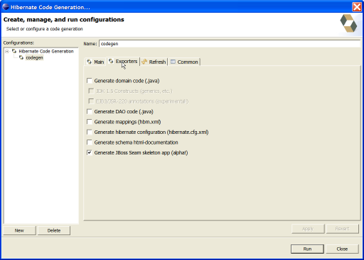

General
Hibernate Tools Core improvements
This release does not add much new functionallity, but has some updated documentation and bugfixes (see JIRA release notes). I recommend to check out previous new and noteworthy's to see screenshots of the latest added features
Reverse engineering
Version/optimistic locking
Reverse engineering now automatically makes columns named "VERSION" into <version> tags.
If you don't want this behavior then provide your own reverse engineering strategy that returns false in the method useColumnForOptimisticLock. In a future version there will be a more userfriendly toggle for it.
Reverse Engineering Strategy in Eclipse UI
It is now possible to specify a custom ReverseEngineeringStrategy in the Eclipse UI. This have been available in the Ant tasks for a while, and now also in the UI

Code Generation
Updated JBoss Seam exporter
Last release brought an exporter that generates a basic CRUD JBoss Seam application. In this version this has been made complete and now generates a full working Seam application; read the generated README.TXT for details on how to deploy it
